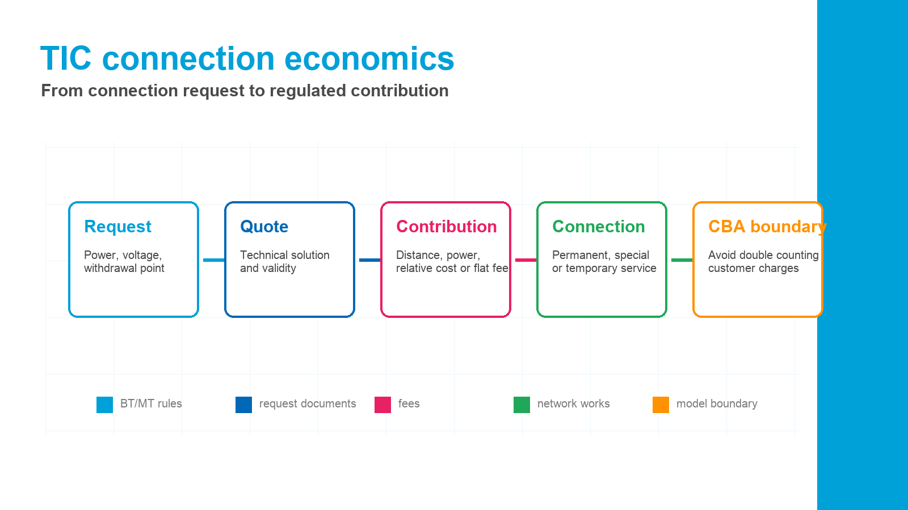

TIC in force from 1 January 2026
Connection service economic rulesRegole economiche del servizio di connessione
This page translates the Integrated Text for the Economic Conditions of the Electricity Connection Service. It explains who can request a connection, what the request and quote must contain, how contributions are calculated, and when flat fees or actual-cost reimbursement apply. Testo Integrato delle Condizioni Economiche per l'erogazione del servizio di connessione elettrica: richieste, preventivi, contributi, connessioni temporanee, prestazioni specifiche e aggiornamenti annuali.

Why it matters
How TIC supports the A2A CBACome TIC supporta l'ACB A2A
TIC is not the benefit methodology. Its role is to clarify the regulated treatment of connection service costs, customer contributions, technical request rules, and specific service charges that may matter when classifying assumptions or avoiding double counting. TIC non è la metodologia dei benefici. Serve a chiarire il trattamento regolato dei costi di connessione, dei contributi dei clienti, delle regole tecniche di richiesta e dei corrispettivi per prestazioni specifiche che possono rilevare nelle ipotesi o per evitare doppi conteggi.
- Use for model boundariesPerimetro del modelloSeparate DSO network investment costs from regulated customer connection charges and specific-service fees.Distingue costi di investimento del DSO, contributi regolati di connessione e corrispettivi per prestazioni specifiche.
- Use for assumptionsIpotesiIdentify whether an item is calculated by distance, available power, relative cost, a flat fee, or no charge.Identifica se una voce si calcola per distanza, potenza disponibile, spesa relativa, forfait o assenza di contributo.
- Use for contextContestoUnderstand rules for ordinary permanent, special permanent, temporary, high-voltage, and inter-network connections.Spiega connessioni permanenti ordinarie, permanenti particolari, temporanee, alta tensione e interconnessioni tra reti.
- Use for citationsCitazioniCite TIC when discussing connection-service economics rather than WACC or ARERA benefit categories.Cita TIC per le condizioni economiche del servizio di connessione, non per WACC o categorie benefici ARERA.
English working translationTesto fonte
Full regulatory context by titleContesto regolatorio completo per titolo
The wording below is an English working translation of the document's operative meaning, organized in the same sequence as the source. Struttura e contenuti del TIC organizzati nello stesso ordine del documento sorgente.
Title ITitolo ITitle IITitolo IITitle IIITitolo IIITitle IVTitolo IVTitle VTitolo VTitle VITitolo VITitle VIITitolo VIITitle VIIITitolo VIIITitle IXTitolo IXTitle XTitolo XTablesTabelle
Title I - Definitions and scopeTitolo I - Definizioni e ambito di applicazione
The TIC adopts definitions from TIT, TIME, and Resolution 281/05, then adds connection-specific definitions. A measuring device is the equipment needed to acquire metering data. Delivery equipment is the equipment at the withdrawal point needed to supply electricity. The reference substation is the distributor substation closest to the withdrawal point and in service for at least five years. Temporary connection network assets may be permanent assets used repeatedly at a site or transitory assets removed after use.
Il TIC richiama le definizioni di TIT, TIME e deliberazione 281/05 e aggiunge definizioni specifiche. Apparecchiatura di misura, apparecchiature di consegna, cabina di riferimento e impianti per connessioni temporanee sono definiti per stabilire come si calcolano richieste e contributi.
The requester may be the final customer or the seller acting on behalf of the final customer. The document also defines relative cost as materials plus labour plus general expenses equal to 20% of those amounts. A consumption unit is normally one property unit, but certain related or condominium units may be aggregated under specific conditions.
Il richiedente può essere il cliente finale o il venditore mandatario. La spesa relativa è definita come materiali, manodopera e spese generali pari al 20% di materiali e manodopera. L'unità di consumo è di norma l'unità immobiliare, con casi specifici di aggregazione.
Title II - General provisions for connection to electricity networksTitolo II - Disposizioni generali per il servizio di connessione alle reti elettriche
Requests for new or modified low-voltage connections are submitted to the local distributor. Requests for interconnection between network operators go to the distributor when power is below 10 MVA and to the transmission system operator when it is at least 10 MVA. Technical connection conditions depend on the voltage level: the grid code for national transmission, ARG/elt 33/08 for distribution above 1 kV, and CEI 0-21 for distribution up to 1 kV.
Le richieste di connessione o modifica in bassa tensione vanno al distributore competente. Le interconnessioni tra gestori di rete dipendono dalla potenza: sotto 10 MVA distributore, da 10 MVA in su gestore della trasmissione. Le condizioni tecniche variano per livello di tensione.
A request must specify power requirement, supply voltage, and withdrawal or interconnection location. For multiple withdrawal points, project documentation, number of points, voltage, and total power need must be provided.
La richiesta deve precisare fabbisogno di potenza, tensione di alimentazione e ubicazione del punto di prelievo o interconnessione. Per pluralità di punti di prelievo servono documentazione progettuale, numero dei punti, tensione e fabbisogno complessivo.
Single withdrawal point, offer, and connection categoriesUnico punto di prelievo, preventivo e tipologie di connessione
Each property unit is generally connected through a single withdrawal point for each contract type. Domestic low-voltage users may request a second point solely for heat pumps, also usable for private EV charging. Additional EV-only withdrawal points may be requested for certain user types. Permanent connections up to 100 kW are normally supplied in low voltage unless justified otherwise.
The network operator provides a connection offer with the minimum contents required by TIQC. The quote remains valid for at least three months for low-voltage supplies and six months in other cases. If the requester asks for a different solution from the technical minimum, the extra cost is charged to the requester. If public-authority constraints prevent the technical-minimum solution, the distance component is doubled and the constraints must be explained in the quote.
Connections are ordinary permanent, special permanent, or temporary. Special permanent connections include unmanned installations outside inhabited areas, luminous signs, monument lighting, ski lifts, mobile or precarious installations, remote non-permanent residences beyond 2,000 metres from the reference MV/LV substation, and constructions not reachable by vehicle road or separated by sea, lake, or lagoon.
Ciascuna unità immobiliare è normalmente connessa mediante un unico punto di prelievo per tipologia contrattuale. I clienti domestici BT possono richiedere un secondo punto per pompe di calore, utilizzabile anche per ricarica privata di veicoli elettrici.
Il gestore di rete mette a disposizione il preventivo con i contenuti minimi previsti dal TIQC. Il preventivo resta valido almeno tre mesi per forniture BT e sei mesi negli altri casi. Soluzioni diverse dal minimo tecnico comportano l'addebito dei maggiori costi.
Le connessioni sono permanenti ordinarie, permanenti particolari o temporanee. Le permanenti particolari comprendono installazioni non presidiate, insegne luminose, impianti mobili o precari, seconde case remote e costruzioni non raggiungibili da strada carrabile.
Rights, obligations, meters, and conventional distanceDiritti, obblighi, misura e distanza convenzionale
By paying the contribution, the requester acquires network access rights within the available power limit. Systematic excess withdrawals may lead to automatic charging for power adjustment; exceeding available power in at least two different months of the calendar year is normally treated as systematic. The network operator builds the connection network assets, installs metering equipment, and may install power limiters where safety requires. For requested power up to 30 kW, available power is the requested power plus 10%, except where specific rules apply.
Metering equipment must be close to the withdrawal point and accessible to the network operator even without the final customer. In multi-unit buildings, meters are centralized. In fenced properties, meters are placed at the property boundary with direct public-road access. The conventional distance used for contribution calculation is measured in a straight isometric line from the barycentre of the reference substation to the withdrawal point.
Con il pagamento del contributo il richiedente acquisisce il diritto di accesso alla rete entro il limite della potenza disponibile. Prelievi sistematici oltre la potenza disponibile possono comportare l'addebito automatico dell'adeguamento.
Le apparecchiature di misura devono essere prossime al punto di prelievo e accessibili al gestore anche senza il cliente finale. La distanza convenzionale si misura in linea retta isometrica dal baricentro della cabina di riferimento al punto di prelievo.
Title III - Ordinary permanent low-voltage connectionsTitolo III - Connessioni permanenti ordinarie in bassa tensione
For ordinary permanent low-voltage connections, TIC applies flat-rate contributions covering connection construction costs, including electrical primary urbanization works. Contributions are based on available power and conventional distance from the reference MV/LV substation. Multiple-connection rules apply to new or renovated buildings with more than two property units, residential developments, subdivided areas, and industrial, craft, or commercial developments electrified before individual withdrawal points are activated.
Per le connessioni permanenti ordinarie in bassa tensione si applicano contributi a forfait basati su potenza disponibile e distanza convenzionale dalla cabina MT/BT di riferimento.
For resident domestic customers with available power up to 3.3 kW, the fixed distance charge applies in addition to the power component. If the distance exceeds 200 metres and the customer later requests power above 3.3 kW, the network operator may charge the difference between the distance amount already paid and the amount corresponding to the actual distance.
Per clienti domestici residenti con potenza disponibile fino a 3,3 kW si applica la quota fissa distanza oltre alla quota potenza. Oltre 200 metri, successive richieste sopra 3,3 kW possono comportare conguaglio della quota distanza.
Title IV - Ordinary permanent medium-voltage connectionsTitolo IV - Connessioni permanenti ordinarie in media tensione
A requester for a medium-voltage connection must build its own MV/LV transformation substation according to distributor requirements and must make available a room, easily accessible from a public road, for delivery and metering equipment. Contributions for ordinary permanent medium-voltage connections are flat-rate charges based on available power and conventional distance from the reference HV/MV substation. For increases in available power, only the power quota for the additional power is charged.
Per la media tensione, il richiedente realizza la propria cabina MT/BT secondo le prescrizioni del distributore e rende disponibile un locale accessibile per consegna e misura. I contributi sono a forfait per potenza e distanza dalla cabina AT/MT di riferimento.
Title V - Temporary connections in medium and low voltageTitolo V - Connessioni temporanee in media e bassa tensione
Owners or operators of equipped areas used periodically for travelling shows, events, fairs, religious, political, sports, theatrical, television, film, or similar activities may request permanent network assets for repeated temporary connections. These are charged under ordinary permanent connection rules. If a temporary connection only requires activation, the fixed contribution for activation/deactivation after default applies once at activation, with a 50% reduction for remotely managed users.
Temporary low-voltage connections up to 40 kW, within 20 metres of existing permanent distribution assets and not requiring a temporary MV/LV transformer substation, use the flat fees in Table 5. Other cases, including distance above 20 metres, temporary transformer substation, low-voltage above 40 kW, or medium-voltage temporary connection, are charged by relative cost. The distributor must provide a detailed estimate of materials, labour, and 20% general expenses and publish annual unit price lists for labour and common materials.
I titolari o gestori di aree attrezzate per spettacoli viaggianti, eventi, fiere e attività analoghe possono richiedere impianti permanenti per connessioni temporanee ripetute, valorizzati secondo le regole delle connessioni permanenti ordinarie.
Le connessioni temporanee BT fino a 40 kW entro 20 metri da impianti permanenti esistenti usano i corrispettivi a forfait della Tabella 5. Gli altri casi sono valorizzati a spesa relativa, con dettaglio di materiali, manodopera e spese generali.
Title VI - Special permanent connectionsTitolo VI - Corrispettivi per connessioni permanenti particolari
For special permanent connections, the connection contribution equals the relative cost. Mobile or precarious installations located in inhabited centres and holding public-land occupation permits are treated under ordinary permanent connection rules. In newly electrified areas requiring a new MV/LV substation, a distributor may request ARERA authorization to apply flat-rate contributions based on available power and distance from the new substation, when formal requests cover at least 50% of the average number of customers connected to comparable MV/LV substations.
For special connections, the network operator may choose local generation instead of a physical network connection, using renewable generation where possible. In such cases, Table 6 contributions apply.
Per le connessioni permanenti particolari il contributo è pari alla spesa relativa. Impianti mobili o precari in centri abitati con autorizzazione all'occupazione di suolo pubblico seguono le regole delle connessioni permanenti ordinarie.
Per connessioni particolari il gestore può scegliere l'alimentazione con generazione locale invece della connessione fisica alla rete, privilegiando fonti rinnovabili ove possibile; in tali casi si applica la Tabella 6.
Title VII - High and extra-high voltage connectionsTitolo VII - Connessioni in alta e altissima tensione
For high- and extra-high-voltage connections, the contribution is 50% of the relative cost of building the connection network assets. The cost includes all works needed for connection, including works anticipated by the distributor and allocated pro rata according to the requester's available power, provided they concern assets at the same voltage level as the supply. For costs advanced by the distributor, evidence must be provided of total costs, allocation criteria, and the portion not yet covered by previous contributions.
Per le connessioni in alta e altissima tensione il contributo è pari al 50% della spesa relativa per la realizzazione degli impianti di rete per la connessione, inclusi gli interventi anticipati dal distributore e ripartiti pro quota.
Title VIII - Interconnection between networksTitolo VIII - Disciplina dell'interconnessione tra reti
When network interconnection assets are requested, the network operator that builds the asset recovers the cost through the investment-remuneration rules governed by TIT. No contribution is charged to the network operator that does not build the asset.
Quando sono richiesti impianti di interconnessione tra reti, il gestore che realizza l'impianto recupera il costo tramite le regole di remunerazione degli investimenti disciplinate dal TIT. Non è dovuto contributo dal gestore che non realizza l'impianto.
Title IX - Other specific servicesTitolo IX - Altre prestazioni specifiche
Fixed contributions apply for deactivation/reactivation or power reduction after default and for recurring seasonal users, with a 50% reduction for remotely managed users. No administrative contribution applies for new connections, transfers, contract takeovers, other contractual modifications, or supplier switching. Moving low-voltage meters within 10 metres uses the fixed Table 7 charge; beyond 10 metres, relative cost applies. Moving network assets is charged by relative cost. For services charged by relative cost, non-public-administration requesters pay an advance to cover design and site inspection, offset against the final contribution if the request proceeds.
Si applicano corrispettivi fissi per disattivazione/riattivazione o riduzione di potenza dopo morosità e per utenti stagionali ricorrenti, con riduzione del 50% per utenti telegestiti. Volture, subentri, modifiche contrattuali e switching non prevedono contributo amministrativo.
Title X - Final provisionsTitolo X - Disposizioni finali
Most contribution tables are updated annually according to the capital revaluation index, consistent with tariff updating criteria. Default-related activation/deactivation contributions are updated annually for inflation. Network operators must separately account for connection contributions and specific-service charges by voltage level and service type.
Temporary relief rules apply to domestic low-voltage customers requesting changes in committed contractual power. For increases up to 6 kW, a reduced power charge applies, and in some cases no charge applies if the increase follows a post-2017 reduction for the same customer and POD. Certain later reductions may lead to refund of the previously charged reduced power contribution.
Le tabelle dei contributi sono aggiornate annualmente secondo l'indice di rivalutazione del capitale, coerentemente con i criteri tariffari. I contributi per attivazione/disattivazione dopo morosità sono aggiornati annualmente per inflazione.
Sono previste regole temporanee per clienti domestici BT che richiedono variazioni della potenza contrattualmente impegnata, con quota potenza ridotta o nulla in specifici casi di aumento entro 6 kW.
Contribution tables
Key numerical rules for connection chargesRegole numeriche principali per i contributi di connessione
The source table headers include years through 2027; the extracted numerical values available in this PDF are shown for 2024, 2025, and 2026. Le intestazioni della fonte arrivano al 2027; i valori numerici estratti disponibili nel PDF sono riportati per 2024, 2025 e 2026.
| Table / itemTabella / voce | 2024 | 2025 | 2026 |
|---|---|---|---|
| Table 1 - Ordinary permanent low-voltage connectionsTabella 1 - Connessioni permanenti ordinarie in bassa tensione | |||
| Distance quota: fixed amount, EURQuota distanza: importo fisso, EUR | 206.12 | 206.12 | 209.62 |
| Additional distance quota per 100 m beyond 200 m up to 700 m, EURQuota distanza aggiuntiva ogni 100 m oltre 200 m fino a 700 m, EUR | 103.32 | 103.32 | 105.08 |
| Additional distance quota per 100 m beyond 700 m up to 1,200 m, EURQuota distanza aggiuntiva ogni 100 m oltre 700 m fino a 1.200 m, EUR | 206.12 | 206.12 | 209.62 |
| Additional distance quota per 100 m beyond 1,200 m, EURQuota distanza aggiuntiva ogni 100 m oltre 1.200 m, EUR | 412.23 | 412.23 | 419.24 |
| Power quota, EUR/kWQuota potenza, EUR/kW | 77.49 | 77.49 | 78.81 |
| Table 2 - Reduced domestic power increase casesTabella 2 - Casi di incremento potenza domestica con riduzione | |||
| Power quota, EUR/kWQuota potenza, EUR/kW | 61.26 | 61.26 | 62.30 |
| Table 3 - Ordinary permanent medium-voltage connectionsTabella 3 - Connessioni permanenti ordinarie in media tensione | |||
| Distance quota: fixed amount, EURQuota distanza: importo fisso, EUR | 516.57 | 516.57 | 525.35 |
| Additional distance quota per 100 m beyond 1,000 m, EURQuota distanza aggiuntiva ogni 100 m oltre 1.000 m, EUR | 51.67 | 51.67 | 52.55 |
| Power quota, EUR/kWQuota potenza, EUR/kW | 61.69 | 61.69 | 62.74 |
| Table 4 - Fixed contribution for transition from low to medium voltageTabella 4 - Contributo fisso per passaggio da bassa a media tensione | |||
| Unit fixed amount, EURImporto fisso unitario, EUR | 486.56 | 486.56 | 494.83 |
| Table 5 - Temporary low-voltage connections up to 40 kW and within 20 mTabella 5 - Connessioni temporanee BT fino a 40 kW ed entro 20 m | |||
| Without road crossing: connection fee, EURSenza attraversamento strada: corrispettivo connessione, EUR | 165.20 | 165.20 | 168.01 |
| With road crossing: connection fee, EURCon attraversamento strada: corrispettivo connessione, EUR | 275.33 | 275.33 | 280.01 |
| After-hours connection/disconnection supplement, EURSupplemento fuori orario per connessione/disconnessione, EUR | 20.57 | 20.57 | 20.92 |
| Table 6 - Local-generation supply for special connectionsTabella 6 - Alimentazione con generazione locale per connessioni particolari | |||
| Contribution per kW available, EUR/kWContributo per kW disponibile, EUR/kW | 76.97 | 76.97 | 78.28 |
| Fixed quota, EURQuota fissa, EUR | 530.87 | 530.87 | 539.89 |
| Table 7 - Other specific servicesTabella 7 - Altre prestazioni specifiche | |||
| Default-related deactivation/activation and recurring seasonal users, EURDisattivazione/attivazione per morosità e utenti stagionali ricorrenti, EUR | 27.18 | 27.61 | 28.02 |
| Low-voltage meter relocation within 10 m, EURSpostamento misuratore BT entro 10 m, EUR | 222.58 | 222.58 | 226.36 |
| Table 8 - Advance for quoted relative-cost connectionsTabella 8 - Anticipo per connessioni preventivate a spesa relativa | |||
| Advance, EURAnticipo, EUR | 100.00 | 100.00 | 100.00 |
Multiple temporary requestsRichieste temporanee multiple
For multiple temporary low-voltage requests at the same supply location, reductions in Table 5 are 0% for one request, 40% for 2-4 requests, 50% for 5-9 requests, and 55% for more than 9 requests.
Per richieste temporanee multiple nello stesso luogo, le riduzioni sono 0% per una richiesta, 40% per 2-4, 50% per 5-9 e 55% oltre 9.
Relative costSpesa relativa
Relative cost means materials plus labour plus general expenses equal to 20% of materials and labour.
La spesa relativa è materiali più manodopera più spese generali pari al 20% di materiali e manodopera.
No charge casesCasi senza contributo
No administrative contribution is charged for transfers, takeovers, other contractual changes, or supplier switching.
Non si applica contributo amministrativo per volture, subentri, modifiche contrattuali o cambio fornitore.